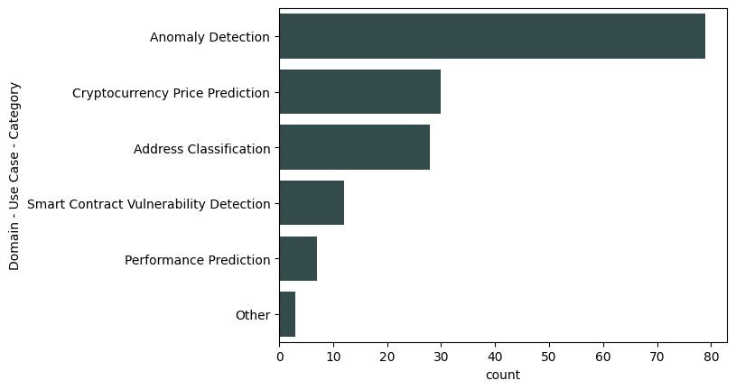
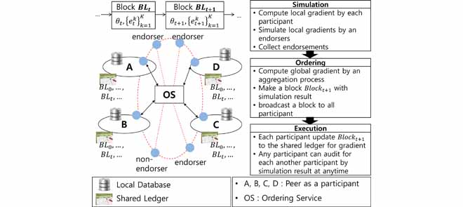

This syllabus covers a range of research papers on machine learning and the applications of machine learning to blockchain data. This chart shows the proportion of published articles for each topic.
Supervised Learning
- Machine Learning in the Blockchain Era: Review and Outlook
- When Blockchain Meets AI: Optimal Mining Strategy Achieved By Machine Learning
- Machine Learning on Blockchain Data: A Systematic Mapping Study
Classification
Regression and Predictive Analytics
- Predicting Bitcoin Prices Using Deep Learning Algorithms
- Machine Learning Techniques for Cryptocurrency Market Analysis
- Forecasting of Cryptocurrency Prices Using Machine Learning Algorithms
Recommendation Systems
- Blockchain-Based Recommendation System: A Review Focusing On Security Aspect
- Blockchain-based recommender systems: Applications, challenges and future opportunities
Unsupervised Learning
Clustering
Anomaly Detection
Sentiment Analysis
Smart Contracts Analysis
Other Use Cases
- Blockchain for secure and decentralized artificial intelligence in cybersecurity: A comprehensive review
- Privacy-Preserving Machine Learning on Blockchain
- Towards Federated Learning on Blockchain: A Secure and Privacy-Preserving Data Mining Architecture
- Machine Learning for Blockchain Consensus
- A Model-Based Machine Learning Approach for Assessing the Performance of Blockchain Applications
- Machine Learning for Blockchain Data Analysis: Progress and Opportunities
- Case Study: A Case Study of How Maersk Adopts Cloud-Based Blockchain Integrated with Machine Learning for Sustainable Practices